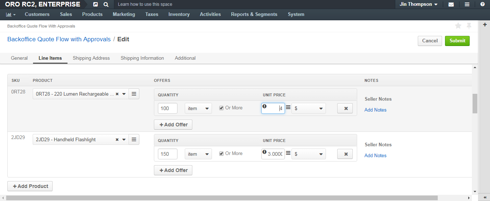
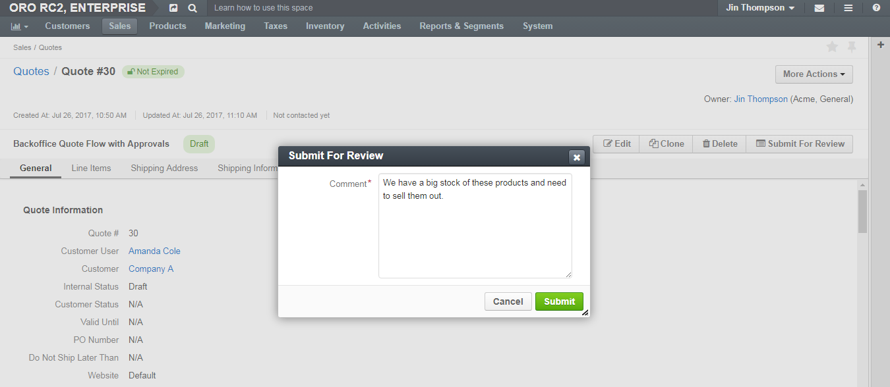
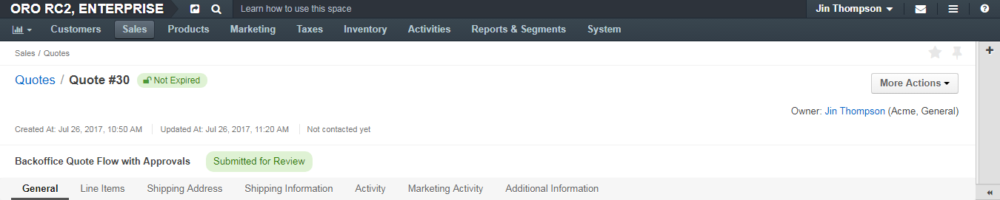
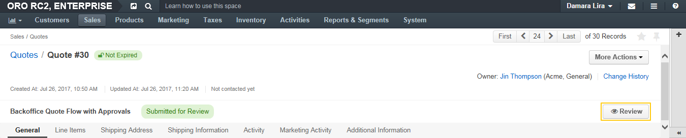
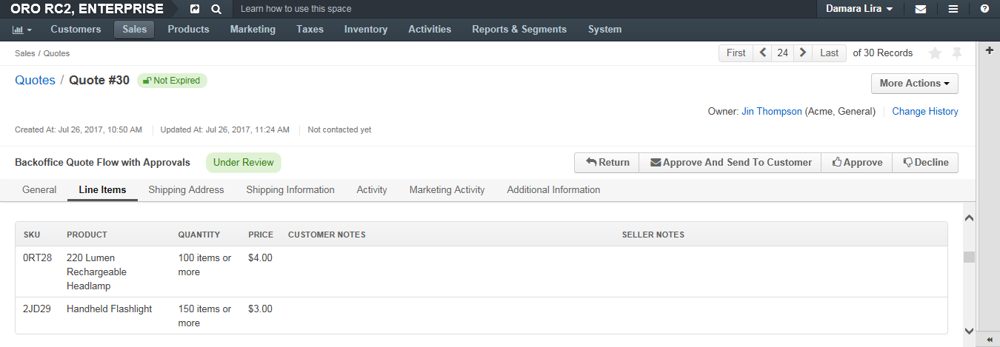
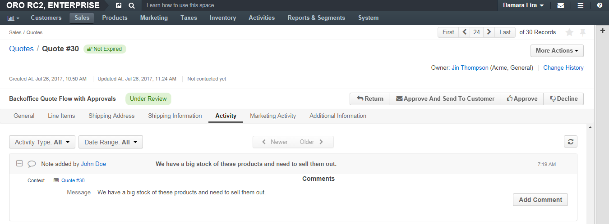
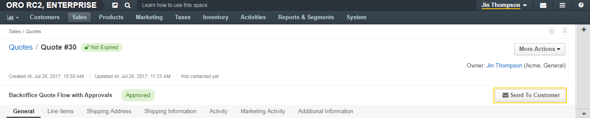
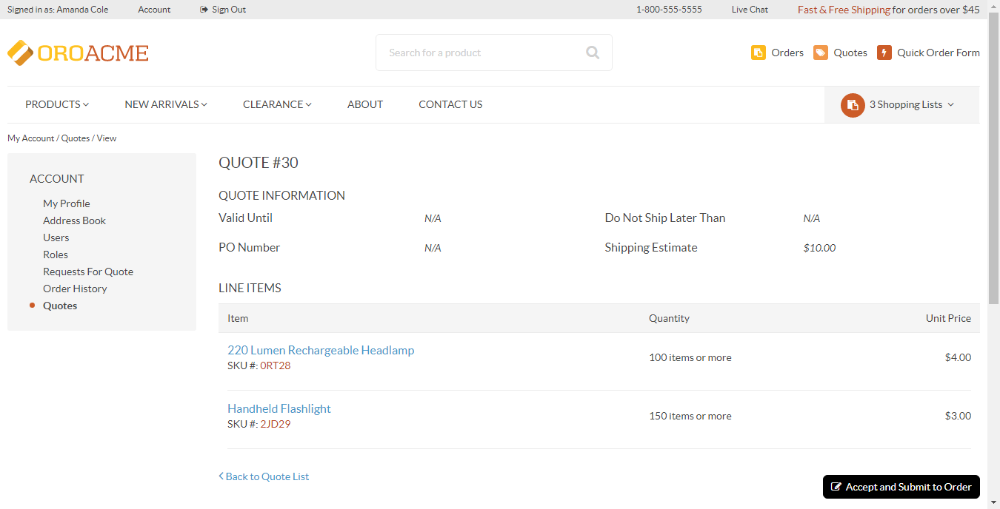

Quote Management with Approvals¶
Note
This flows activates when the Backoffice Quote Flow with Approvals is enabled.
In the following example, a sales rep Jin Thompson creates a quote and modifies prices for the line items.
As the BQFA is active and the price override requires approval, the sales manager Damara Lira reviews the quote and approves it before Jim sends it to the customer.
Let us go through every step of this process:
Jin creates a quote.
Note
The BQFA workflow starts when Jin saves a quote created from scratch, or from a request for quote received from a buyer. For more information on creating quotes, see Quotes.
A newly created quote is in the Draft status. The line item price is not yet modified, and the quote does not require approval. Jin can send it to the customer.

As a customer has a positive record and frequently buys headlamps in bulk, they have negotiated a personal discount of 1$ on every headlamp. The new price for the headlamp is 4$ (an MSRP, the best deal Jin could offer).
To reflect the negotiated price in the quote, Jin clicks Edit and updates the headlamp price:
When Jin saves the changes, the Send To Customer option becomes hidden, as he cannot send the quote without approval. To get it, Jin has to send the quote for review:

Jin clicks Submit for Review, enters a message that justifies the price update and sends the quote for review.
Once submitted, the quote gets into the Submitted for Review status, which is indicated above the quote details. Jin cannot change the quote or call the submission back until the review is complete.
If email notifications were configured, Damara (as the authorized approver) might get an email about the review request.
Sample email text:

Damara opens the quote submitted for review either via the link in the email or by looking it up in the quotes list using the filter by internal status (is any of “Submitted for Review”).
The following page opens:
Damara clicks Review to move the quote to the Under Review status and communicate to Jin that his request is being processed.
The comment that Jin entered when submitting the quote for review is available in the quote’s activities section:
Note
Once the quote is under review, Jin can see the updated status. However, transitions to further steps are disabled until the approval is gained.

As the modified price fits the current aggressive headlamp sale strategy, Damara approves the quote by clicking Approve and leaving a short message for Jim.
Note
Damara may use Approve And Send To Customer action if she is sure the quote is finalized.

This changes the quote status to Approved.

If the email notifications were configured, Jin (as the one who requested approval) might get an email about the review outcome.
Sample email text:

Jin opens the approved quote either via the link in the email or by looking it up in the quotes list using the filter by internal status (is any of “Reviewed”).
The following page opens:

Jin clicks Send To Customer and reviews the email draft. Additional recipients may be added to the To, CC, or BCC fields. The email body may be adjusted to be more personalized.

When Jim is happy with the draft, he clicks Send.
After the quote is sent, Jin or the authorized approver (Damara) can perform the following actions with the quote:
- Cancel
- Expire
- Capture that the customer has declined

In the storefront, the quote becomes available to the customer user it was created for:

Note
See more information about the quote management with approvals via the Backoffice Quote Flow with Approvals. You will learn additional details on the steps and actions available at every step.